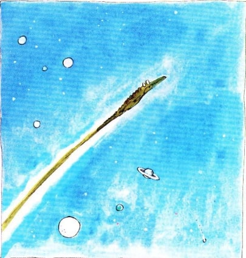
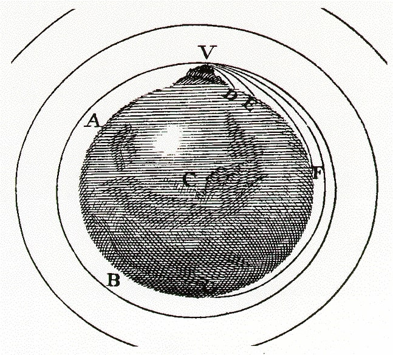
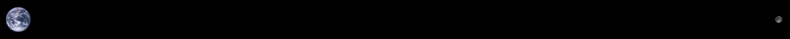
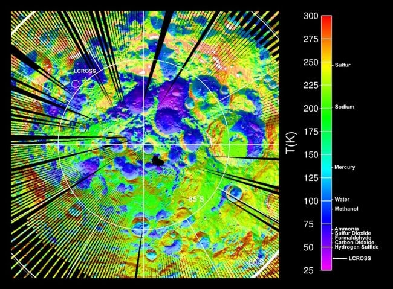
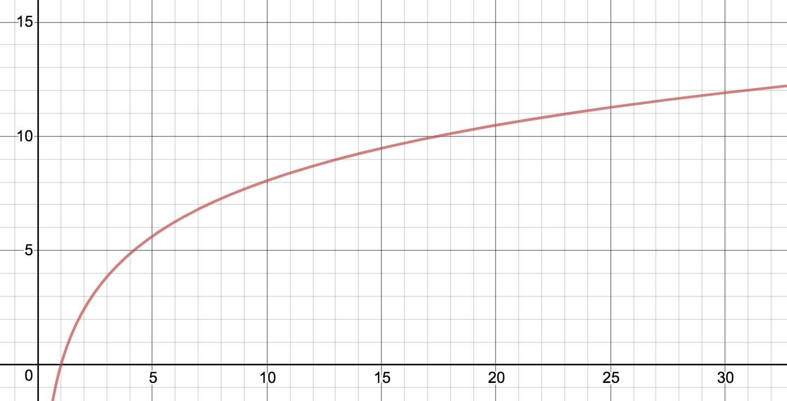
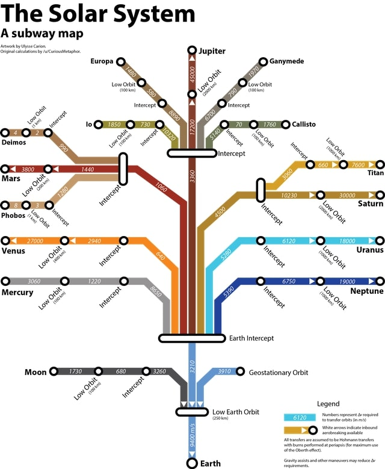

Or how to get to orbit with artful metaphors
This site is an assortment of snippets, facts, and seemingly unrelated musings that seek to answer in concert the eternal questions of the universe. The kinds of things that float to mind when you look up at the night sky and imagine the expanse of the milky way and what lies beyond. Things like
In its current incarnation it is mostly a discussion on space travel and its related technologies. There's a carefully hidden menu button ( ☰ ) at the top of the page.
To get into space, first you probably want to get into orbit.
Space is far above your head and it keeps going forever. Unfortunately so does the gravity of the Earth which poses a problem to those hoping to get off it. The gravity near the international space station is actually about the same strength as it is on Earth which surprises a lot of people. Although astronauts look like they are floating above the Earth they are actually falling towards it just like you or I would.
So why don't they hit? The trick is that they are going sideways very fast. This is called orbit and it's when you go so fast that as you fall towards Earth you miss it and go around instead. And you keep on doing that because there's no air to slow you down. Cool huh?
When you go sideways fast enough your sideways velocity kind of balances out how you fall towards the Earth. You can find out how fast you need to go in order to effectively float if you solve this equation when \(a = 10m/s^2 \) and \(r = 6371000m\) $$ a = \frac{v^2}{r} $$
For the curious, 10m/s is how fast things speed up when you drop them out of your window and 6371 km is the distance from where you are to the center of the Earth.
To be in orbit and not fall down again you need to go about 270 times faster than a car on the highway. The moon, for instance, orbits around the Earth same way that the space station does.
You could actually orbit at 1 meter off the ground if there wasn't any hills or atmosphere. If you've ever put your hand out of the window of car on the highway you'll know that the air can exert quite a strong force if you're going fast. This effect gets much worse the faster you go.
But this is not such a problem when you've gone up high enough and the air gets very thin. Then all you need to do is go fast enough sideways. To do that there are two main strategies which I’ll call the balloon and elephant techniques.
One of the options for getting into space is to use balloons.
The balloon option works about how you'd expect. You blow up a balloon and then you let it go and the balloon makes that farting noise as it jets off around the room. As unlikely as it may seem the balloon option is the most popular way to get into space at the moment.
Nobody has made a balloon which will fly fast enough to get into orbit. Balloons also run out of air quickly, they can pop, and also they reduce in size which would make flying in them cramped. So we had to get something else. Explosions!
Yes the only way people have found to get into space is by sitting on-top of explosions. Not a short explosion like you're used to but one that lasts for minutes. There's many problems with this like if you sit on an explosion won't you explode? And how do I keep an explosion going once it's exploded?
For the time being you can think of a more practical incarnation of balloon technology as a giant, very powerful spray can. It's pressurized, made of metal, and has a single button it will eject fast moving gases out of the back like the balloon. If you're a miscreant you sometimes ignite these gases (please don't). I know that spray cans don't fly around the room but just go with me on this.
The elephant technique is the main alternative to balloon technology for getting into orbit.
image source: "The Enormous Crocodile by Roald Dahl"
This technique is not as widely used as you might imagine but the principle is sound. Give a large enough elephant these things are possible as long as he swings you fast enough and lets you go at the right time.
(Caution: Math) If we assume a circumference of the crocodile elephant system of about 10m and give ourselves some wiggle room on orbital velocity (say 10km/s) we find that the elephant would have to spin the crocodile around about a million times per second. Don't give me that look. We just need a bigger elephant.

Newton once outlined this idea in a book of his as he was busy inventing gravity. He didn't know about elephants so he opted to use a cannon instead. He reckoned you better put the cannon on the top of a mountain too. Personally, I prefer launch by elephant.

Figure: Going fast enough sideways from the top of a mountain to get into orbit by Isaac Newton
It turns out that even a really big cannon will only get you part of the way there, so you need a balloon to give you an extra kick at the end. Also once you’re in orbit you’ll need balloon technology to get anywhere else, since there's no more cannons or elephants in space. Also rotating that fast in the atmosphere would disintegrates you. So balloon technology really is the way to go.
So balloons are the way to go into space. Where should we go?
Once you're actually in space you'll have to decide where to go. I mean you could hang around in orbit if you want I guess.
It’s takes a long time to get to another planet so the only reasonable options to go to first are the closest ones; the Moon, Venus, and Mars.
The moon is quite close and has wonderful views.

Distance to scale
There’s no air, it’s very dusty, and has about 15% Earth's gravity. The days are 13 days long and the nights are also 13 days long (totaling one moonth). Because the days are so long the surface can get a bit toasty - about 120 degrees Celcius so you might want to live at the North or South Pole if you don’t want your shoes to melt.

Figure: Temperature of the Moon at the South Pole (credit: NASA)
Hopefully there’s some water in craters so we can do our laundry and take luxurious showers.
Another problem is that there’s no carbon or nitrogen which you need to make people [source] .
Venus is one of the two planets closest to the Earth but it’s 400 Degrees which is a bit of a show stopper. Venus also boasts an atmosphere which is about 100 times thicker than Earth’s [source].
You might be able live above Venus in a blimp (which is like a balloon). 50km above the surface the weather is relatively nice and a blimp full of Earth’s atmosphere would float because Venus's atmosphere is very dense. So you could hang out there … in a blimp [source].
Mars kind of wins by default. Its nearby. The days are about 24 hours. The gravity is 37% of Earth's. It has all the elements that are needed for life. It’s pretty cold - colder than the South Pole, but the max temperature is about 30 degrees C, which is doable. The atmosphere is very thin but better than no atmosphere at all.
Living on Mars would be a little bit like living in Antarctica with low gravity and space suits.
Since there’s liquid water and the other necessary elements there might be living things on Mars.
It turns out that to get to other planets you need to go really fast as well. In fact the distances between planets are not measured in km they're measured in speeds.
The change in velocity that you can achieve is the product of the exhaust velocity and the natural logarithm of the mass ratio, which is the final mass divided by the initial mass. Here it is in math gobbledygook.
$$\Delta v = V_e \ln (M_f / M_i)$$
Rocket people will refer to this as delta-v where delta means change and v means v, I mean velocity.
The logarithm function causes the relationship to have this shaped curve which indicates that there’s a limit to how fast you can go since speed is on the vertical axis and there's only so much weight you can lose.

This means that if your rocket is 20 times as heavy when it’s full as it is when it’s empty and it’s got good engines then it’ll be able to accelerate to about 10km/s or about 36000 km/h which is about the speed you need to go to get into orbit (taking losses into account)
Getting a higher mass ratio means trying to get your rocket as light as possible when its empty and still strong enough to go through the atmosphere at thousands of kilometers an hour is what keeps rocket scientists up all night.

The small numbers on the image above are the speeds that are necessary to go to other planets in the solar system. The little triangles mean you can use the atmosphere to slow down instead of your rocket engines (aerobraking).
Earth’s delta-v is a bit higher than it is theoretically because whenever a rocket is going straight up none of that speed goes into getting to orbital speed. Typically a rocket will lose about 1km/s going upward.
Mars actually looks like its very easy to get to if we are good at aerobraking. But it’s very hard to aerobrake on Mars. Mars has a very thin atmosphere and very large mountains to crash into if you make a mistake. People are trying though.
Space is where you put things. For instance you'd say "There's a space to put that couch!" but you wouldn't say that if there already was a couch there. Outer space is mostly the same - there's no couches and also no air. It would be embarrassing to try to breath in space so don't try.
People who study space say it's very complicated and start using words like virtual particle. But in space travel the hardest thing is simply how far away everything is.
"Space is big. You just won't believe how vastly, hugely, mind-bogglingly big it is. I mean, you may think it's a long way down the road to the chemist's, but that's just peanuts to space." - Douglas Adams
People are sometimes told that space is extremely cold which is misleading. There's almost nothing in space which means it's not that cold. It's the difference between putting your hand in boiling water vs putting your hand in the oven when it's 100 degrees. The water is going to be much worse because there's much more stuff in the water than in the oven. Similarly there's almost no atoms in space (which you could probably work out from the name) so there's nothing to steal your thermal energy and make you feel cold. So it wouldn't really feel that cold. But if your naked skin is feeling space directly then you're probably already in trouble.
"It’s impressive what nothing can do to a man." - Jayne, Firefly
Vacuum (emptiness) can cause all kinds of grief. Because your atoms are bouncing around all the time they will spreads as soon if they can like a fat guy on a King sized bed in an expensive hotel suite. Although air seems quite thin there's more than a million million million million atoms in your room bouncing against each other and on you at the moment which keep your mischievous liquids from escaping (boiling off). There's even air molecules in your mouth keeping the saliva on your tongue in check.
6e24 / 24.5 == 2.45e23 # molecules per litre normally
Because you're so much warmer and denser than the atoms in space, the liquids you're made of will actually boil off in space which will cause you to have a bad day.
This video doesn't make my point but it's cool.
Apparently black holes do exist now and we are all doomed eventually to enjoy living with and eventually in them by the time the universe ends. So I for one have decided to try to relate to my spatially challenged brethren by finding out just how small I’d have to become become one of them. What followed might surprise or bore you.
Long story short - I would need to be squeezed to about the size of a proton. So no good news there. The Earth would need to be squeezed to the size of a peanut. Our sun would need to be mushed into a region the size of Manhattan.
Black holes can get startlingly large which is illustrated beautifully in this video.
Gravity is the weakest of the fundamental forces. It's a trillion trillion trillion times weaker than the other ones. But it doesn't cancel out like they do, it just keeps on adding up. So it gets strong when things are big and comes into play when dealing with asteroid sized things and above.
Everything pulls on everything else just a little bit. Your neighbour (if she's there) is currently pulling on you with an invisible force. The Earth is bigger than everything else so it pulls the most. This is the reason why you can only fly in your dreams and probably can't dunk in basketball. It's called gravity. Newton invented it a while back.
$$F = \frac{G m_1 m_2}{r^2}$$
Although astronauts in orbit look like they're floating they're actually continually falling towards the Earth. The earth pulls on the astronauts about as strongly as it does to you but they keep on missing the Earth as they fall. They are going so fast sideways as they hurtle towards the ground they miss. Then they miss again and again. This continuous falling but never crashing into the thing is called orbiting like an orb or circle.
Circular Motion is only tangentially related to gravity but is still amusing.
We orbit in squished circles called ellipses that are shaped a bit like eggs. Nature is pretty random and the things that didn't rotate in something resembling a circle hit eachother until they did but they're still not perfect circles. None of the planets orbits really intersect because they're the only planets left after the old ones got into fisticuffs as mentioned before.
Incidentally the moon originally got into fisticuffs with the earth which is why it always looks at us with the same face, meaning it's rotational velocity is the same as the Earth's because it smashed into us a while back before it started to orbit. This is why there's a Dark side of the moon album by Pink Floyd. The only way you can see the back of the moon is with a spaceship going around the back.
There is slightly more to gravity than this. It's arguably still the greatest mystery still known to physics in that scientists haven't been able to come up with a theory that explains it using their usual tricks like reducing everything to the interplay of microscopic particles that dance with one another.
Advanced balloon technology is called rocketry. Rocket science (engineering) is hard because it's basically about how to sit on top of an explosion. The main problem with our balloon turns out to be the main problem with our rocket. It runs out of gas. If you run out of gas then you might get stuck in empty space.
If you sit on a chair then you can move by pushing on something else like another person on a chair. Or you could get a fire extinguisher and use it to move. You’ll move in the opposite direction to the thing you were trying to move. It turns out that invisible atoms works like this as well. When the atoms shoot out of the back or the rocket they are coming from a collision that came from a collision that came from a collision that hit the back of your rocket and imparted the same push to you as it got from the explosion.
Balloons work the same way. It goes forwards because the air goes backwards and the little pieces of air all hit each other and the last one hit on the inside of the balloon. It turns out that the last collision was between the balloon and the last atom. So it’s the thing that actually moves forward. It actually moves forward and hits more air molecules and it will speed them up as it hits them.
You can hit a hammer on some metal to test this. If they get hot very quickly they’ll go faster and try to fly off in all directions. If we put a hole in the bottom it’ll fly out backwards and push us forwards. In fact the rocket is a bit like a very very powerful spray can. It's made of metal and once you press a button a lot of junk will spray out of it.
It's quite hard to imagine how this actually works because rockets are so much larger and more powerful than things we're used to. But in addition to the exhaust being essentially a continuous explosion, the weight of the stuff shooting out of the back of the rocket is quite high also. Here is an example of fuel usage as measured in elephants.
Airplanes move by using big fans to move air. There's no air in space so they top out at a certain altitude. You can use a big plane to lift a little rocket up a bit higher but if you want to lift a big rocket you need an even bigger plane and sometimes there just isn't a large enough plane. Also the main problem is to go fast enough to get into orbit and planes don't solve that. Not to mention that plane engines won't get you anywhere else in the Solar System.
Here is the essential process of rocket manufacture in the modern world